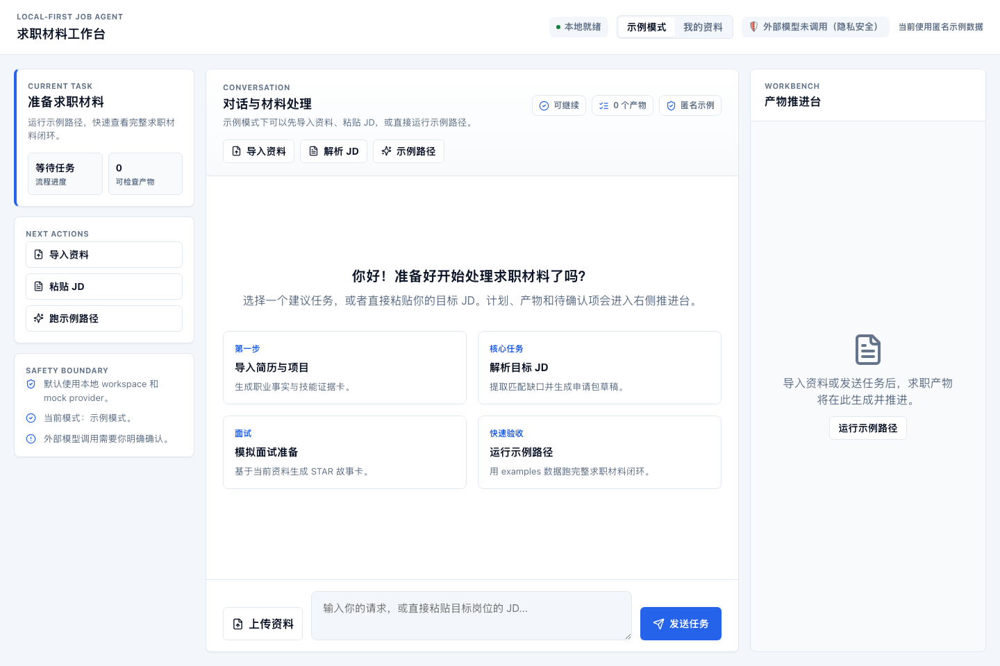
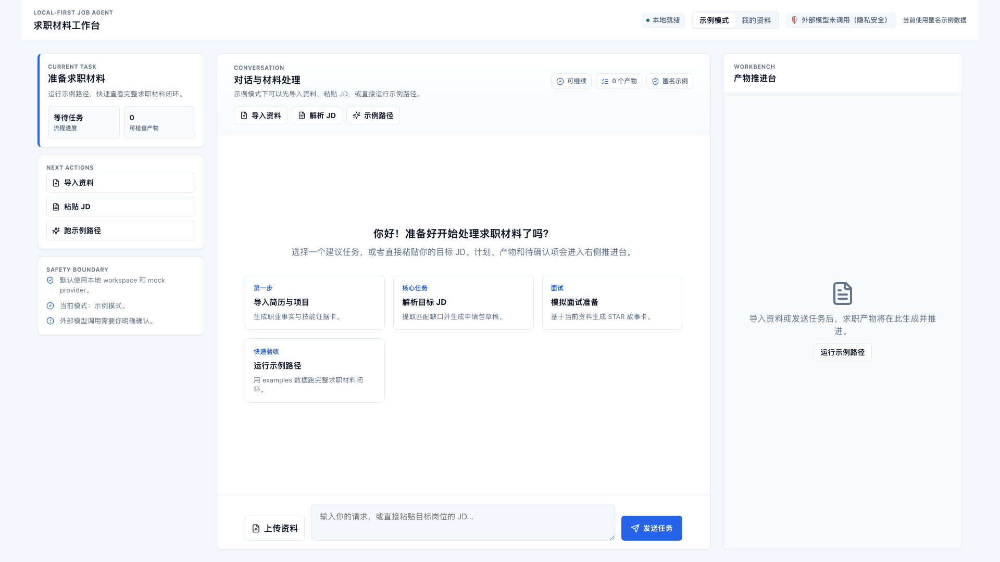
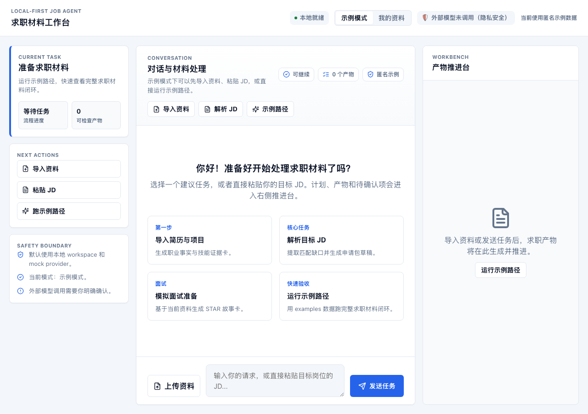
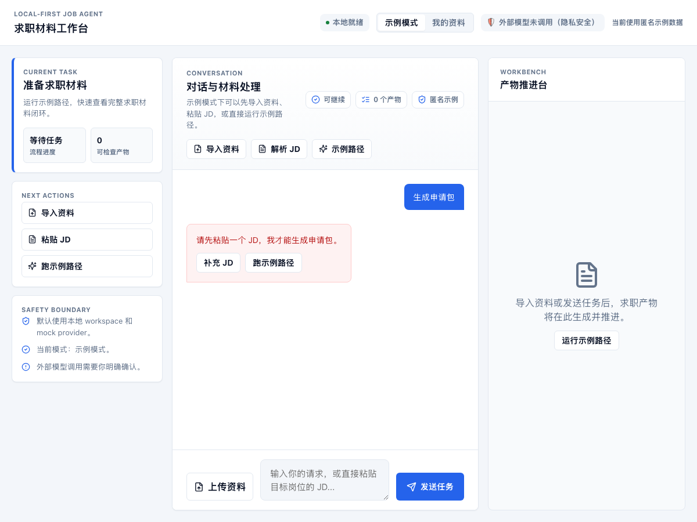
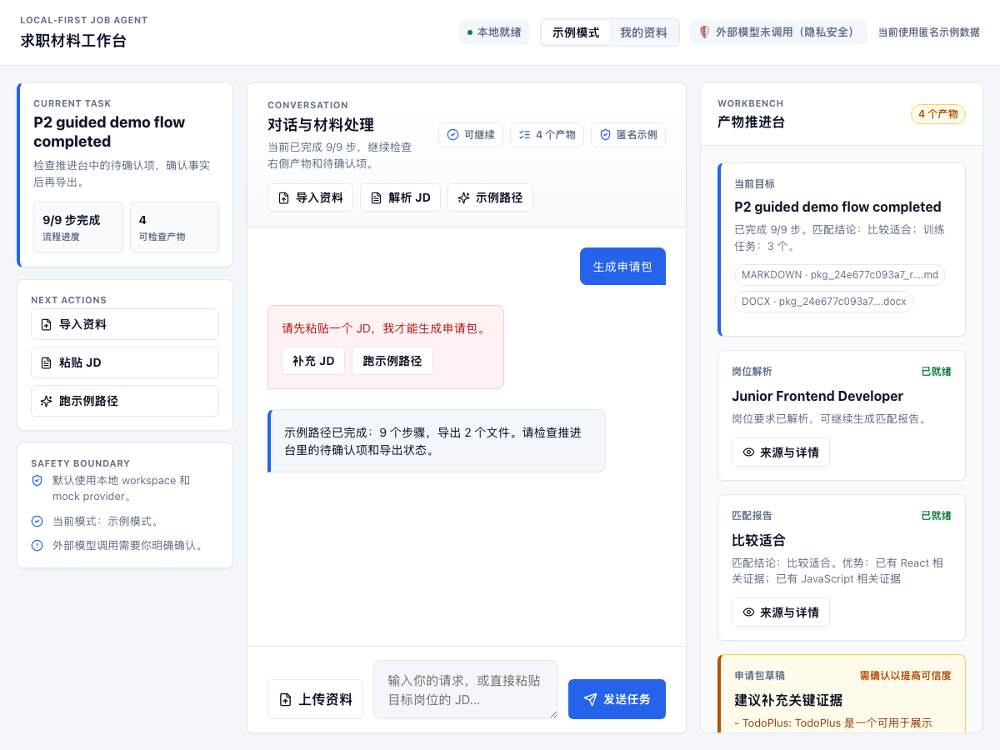
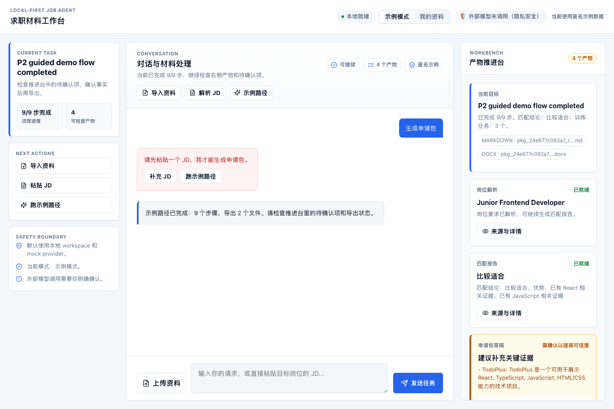
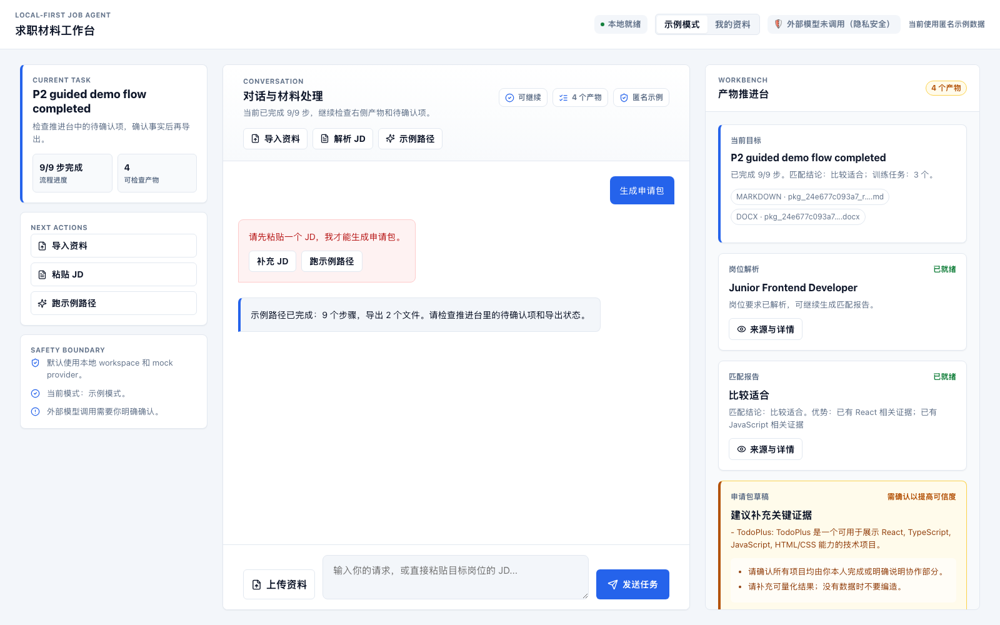

P4 UX Acceptance Report · 2026-06-17
JobPilot AI P4 UX 体验强化验收报告
本报告记录 P4 当前自动化验收结果。结论口径：P4 UX 工程实现、示例真实感数据路径、Chrome 截图和回归测试已完成；人工主观体验认可仍需人类最终确认。
自动化通过
测试与构建
python3 -m pytest：63 passed；npm --prefix apps/chatbox run build：通过。
截图通过
Chrome 可见证据
覆盖 1200px、1280px、1440px、1600px、1920px 全尺寸桌面，以及 720px 窄屏、390px 移动抽屉。
待人工确认
主观体验
报告仅记录自动化证据；主观体验结论需要用户打开本地页面审查。
目标架构与当前实现
| 架构模块 | P4 目标 | 当前实现证据 |
|---|---|---|
| Chatbox Experience Shell | 状态清楚但不压过任务入口。 | 顶部仅保留本地就绪、模式、外部模型未调用（隐私安全）和数据模式提示。 |
| Suggested Prompts | 任务入口并入 Chatbox 空状态。 | 导入资料、解析 JD、面试准备、运行示例路径均在对话空状态内。 |
| Conversation Plane | 输入后有 thinking、计划、错误恢复或下一步。 | 有效路径显示 Agent 规划；缺少 JD 时显示“补充 JD / 跑示例路径”。 |
| Full-size Desktop Workbench Controller | 1200px、1440px、1600px、1920px 下避免左侧窄栏和右侧大空白。 | 桌面端新增任务上下文面板，形成“上下文 / 对话 / 推进台”三栏工作台。 |
| Workbench Plane | 只展示当前目标、产物、确认项、版本和导出。 | 桌面右栏，移动端底部抽屉；产物卡用“岗位解析 / 匹配报告 / 申请包草稿”等求职语义。 |
| Evidence Plane | 截图、测试、报告和 PRD 检视可追溯。 | 本报告引用真实 Chrome 截图；截图脚本创建独立 target，并清理 viewport emulation；保留未验证范围。 |
用户场景截图证据













P4 验收门槛检视
通过
门槛 0：回归不退化
63 个 pytest 用例通过，前端 build 通过。
通过
门槛 1：空状态入口
Suggested Prompts 位于 Chatbox 空状态，点击可填入或触发任务。
通过
门槛 2：反馈与恢复
loading、业务阻塞、恢复按钮已可见；长内容具备折叠策略。
通过
门槛 3：产物可读
产物卡不依赖裸 JSON；主操作与次操作分层，来源与详情收纳在展开项。
通过
门槛 4：隐私语义
状态栏明确显示“外部模型未调用（隐私安全）”。
通过
门槛 5：响应式
1200、1280、1440、1600、1920、720、390 多档 Chrome 截图已生成；截图脚本结束时清理 viewport emulation。
部分完成
门槛 6：报告与人工审查
HTML 报告和 Gemini 审查包已完成；人工体验认可仍待用户确认。
未验证范围与虚假验收风险
- 本轮自动化验收使用 examples 匿名真实感数据，不等于真实个人资料自动验收。
- 本轮没有默认触发真实外部 provider 调用，也没有验证真实 API Key 生产可用性。
- 人工主观体验仍需用户在浏览器中确认，不能由本报告替代。
- P4 不包含 MCP、CLI、ASR、会议平台、自动投递或 SaaS 登录。